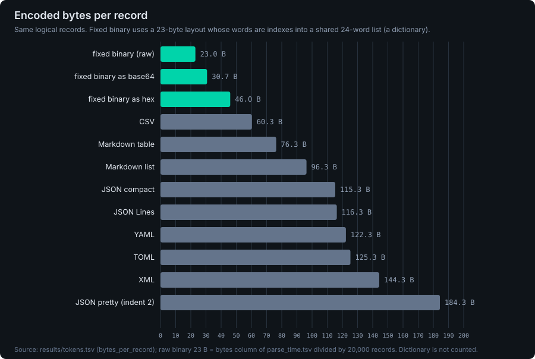
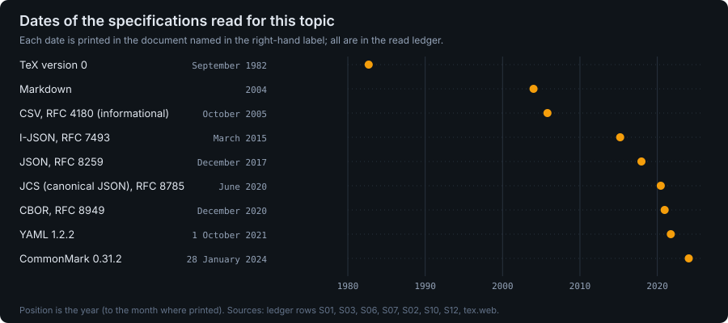
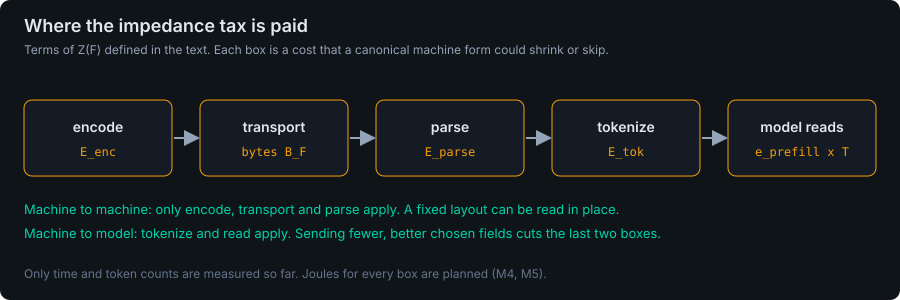
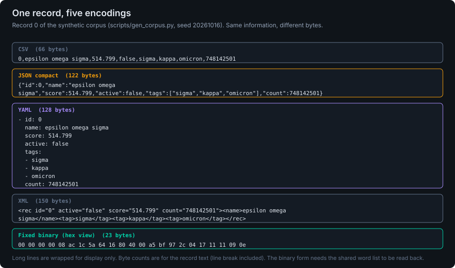
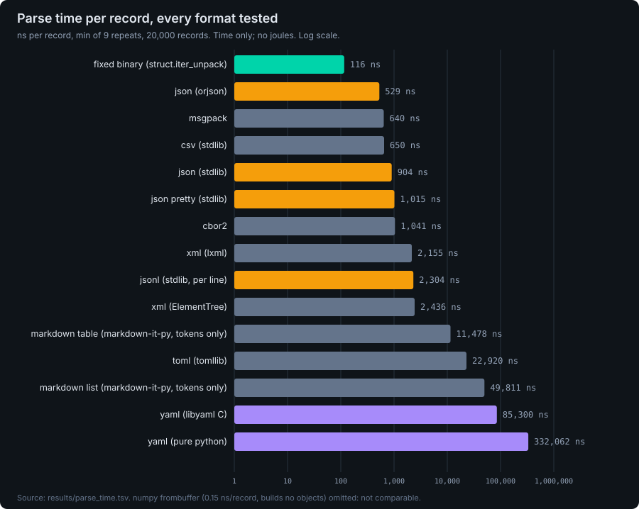
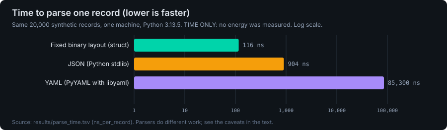
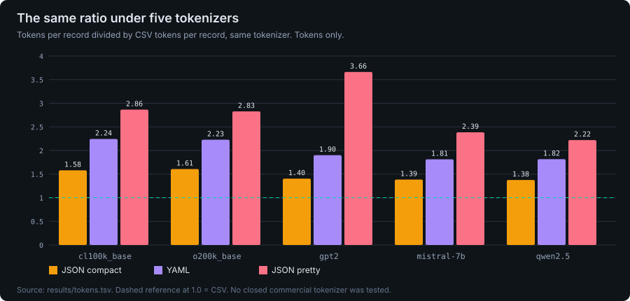
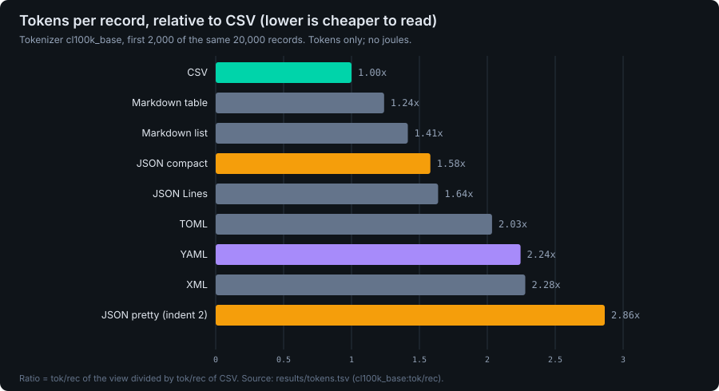

Work in progress. Time and token counts are measured; energy is not yet measured. Every chart is rebuilt from the files below by scripts/make_charts.py.








© 2026 Open Interface Engineering, Inc. MIT OR Apache-2.0, at your option.